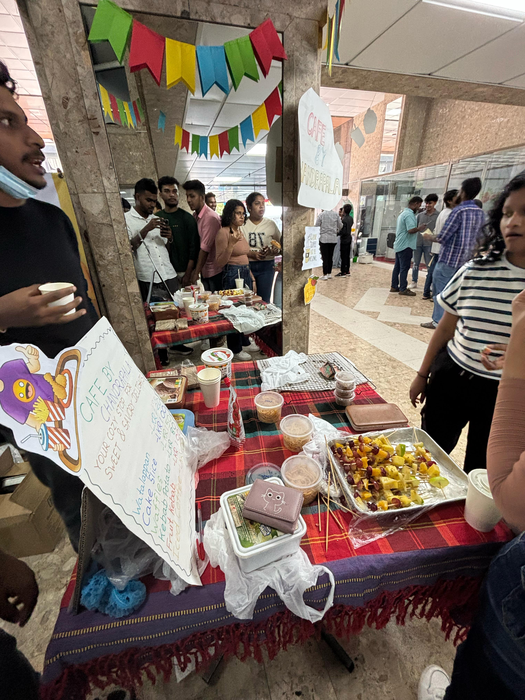
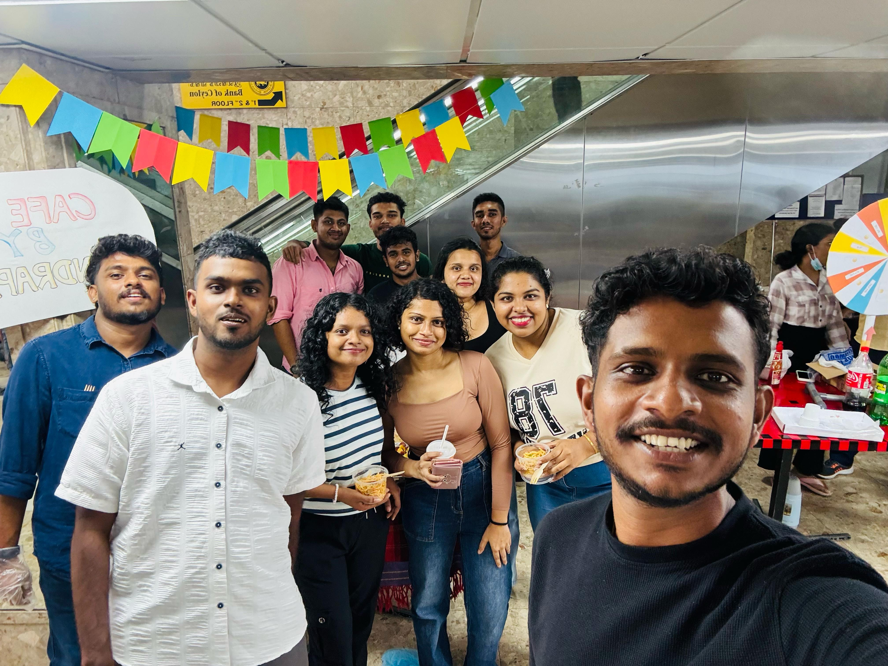
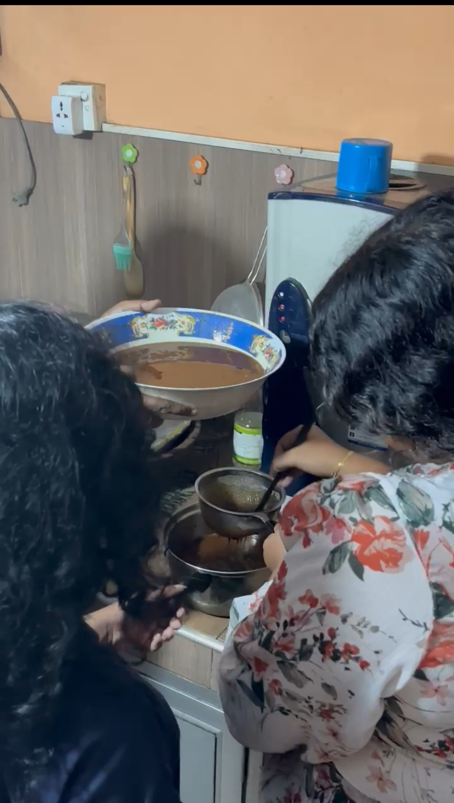

Experiencing leadership, teamwork, and event management.
A Food Festival was conducted by second-year, second-semester students on July 29, 2025, at the university premises during lunchtime. This festival was an assignment for the Professional Skills module. As a group assignment, its purpose was to help students learn leadership, marketing, and how to collaborate effectively.
Each team was allocated 10 members. Our stall was named "Chandarapala." At the Food Festival, we sold a variety of foods, including Spaghetti, Watalapan, Iced Coffee, Mojito, Waffles, Cake, and Fruit Kebab. To ensure greater efficiency and success, each member was assigned a specific task.
Two weeks before the event, we assigned tasks to each member and finalized the menu. One week before, we purchased all the necessary ingredients. The day before the festival, we cooked the Waffles and Cake. On the morning of the event, we prepared the Spaghetti, Iced Coffee, Fruit Kebabs, and Watalapan to ensure they were fresh. Three members decorated our stall two hours before it opened.
The remaining members worked as cashiers and managed the money. One member helped transport the items from another part of the campus. Our stall was located at the entrance of the building, which gave us the advantage of attracting attention from people entering the area.
